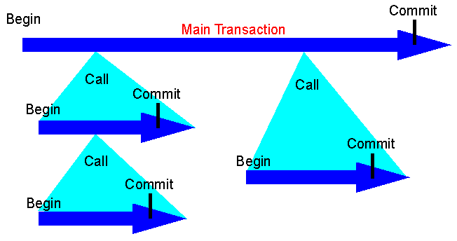

Distributed Programming:
TP Monitors
Nested Transactions:

Main points:
Good points:
TP monitors help the operating system and servers to deal with large numbers of clients.
TP monitors can cooperate with other TP monitors in federated arrangements.
TP monitors can manage process failures across systems.
Bad points:
TP monitors are overkill in single-server, single-vendor applications.
TP monitors add unecessary complexity in small systems.
Contents
Questions?
Next